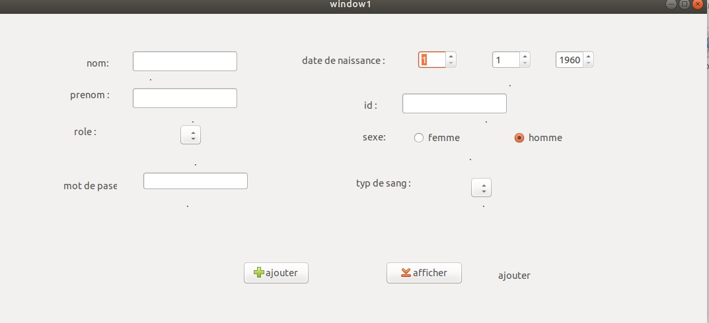

projet de langage c:

ce projet met en evidence les prerecquis du cours et nous pousse a les pratiquer et manipuler les erreurs qui nous surviennent ..
on confronte alors :
- tous type de variables
- les tableaux
- les pointeurs
- les chaines de caracters
- les fichiers
voici un sit web qui vous permeetez d explorez le langage c
projet englais :
notre projet se focalise sur le sdg9 plus precisemment sur l'infrastructure l'innoviation et l'industrie voici un video qui resume notre problematique
qlques projets personnels
effet blury
voir le projet